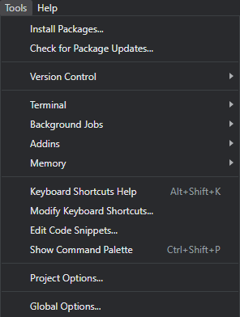

13 Menu Tools
Status 🟨🟨🟨
O menu Tools oferece uma série de funcionalidades para configuração do ambiente de trabalho.
13.1 Install Packages
Nesta opção é aberta a janela para instalação de pacotes.
Install From: local de busca dos pacotes a serem instalados
Repository: repositório configurado
- Packages: nome dos pacotes a serem instalados. Podem ser escolhidos múltiplos pacotes, devendo ser separados por espaço ou vírgula
Package Archive File: opção para busca de arquivo a partir da máquina do usuário. Esta opção habilita botão para busca do pacote
- Package archive: arquivo do pacote a ser instalado
Install to Library: pasta de instalação dos pacotes
Install Dependencies: marcação para que seja feita instalação de dependências dos pacotes selecionados.
13.2 Check for Package Updates
Este opção abre a janela Update Packages, permitindo visualizar quais pacotes possuem versões mais recentes. A coluna NEWS possibilita visualizar o arquivo com dados de atuializações feitas no pacote.
13.3 Version Control
Oferece opção de controle de versões de código através do Git ou SVN.
13.4 Terminal
Permite acesso ao terminal do sistema operacional a partir do RStudio.
13.4.1 Background Jobs
Fornece opções para execução de ‘Jobs’, basicamente scripts em R, em outra instância do R. Desta forma a sessão aberta no RStudio não fica ocupada e permite que o usuário continue seu trabalho. Esta opção é muito útil para processamentos mais demorados.
13.5 Global Options
Esta opção abre a janela Options do RStudio onde podem ser feitas as principais configurações de comportamento da ferramenta.
13.5.1 Geral > Basic
Nesta tela incial Geral > Basic podemos definir muitas características do RStudio, algumas das principais:
R Sessions
R Version: versão a ser usada do R dentro do RStudio. Esta versão pode ser alterada caso exista uma outra isntalação no computador.
Restore most recently opened project at startup: define se o projeto mais recente será carregado ao inicializar.
Restore previously open source documents at startup: define se arquivos de código (sources) recentemente usados serão carregados al inicializar.
Workspace
Restore .RData into workspace at startup: define se ao ser inicializado o RStudio carregará o arquivo .RData do projeto. Esta opção pode ser muito útil, pois resgata a sessão anterior onde ela foi fechada. Entretando caso sejam usados arquivos muito grandes o inicialização pode demorar.
Save workspace to .RData on exit: o “inverso” do anterior, define se os dados da sessão serão salvas ao fechar o RStudio. As opções são: Always, Never e Ask.
History
Always saves History: os comandos passados para o R serão ou não armazenados para consulta posterior?
Remove duplicate entries: elimina as repetições, muitas vezes quando se efetuam testes os mesmos comandos são executados diversas vezes.
Other
- Automatically notify me of RStudio updates: verificar e avisar o usuário se existirem atualizações do RStudio.
Última atualização: 16/08/2023 - 20:37:17